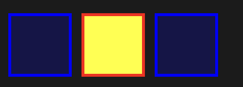
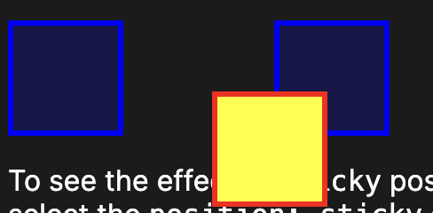
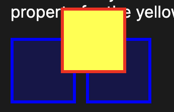
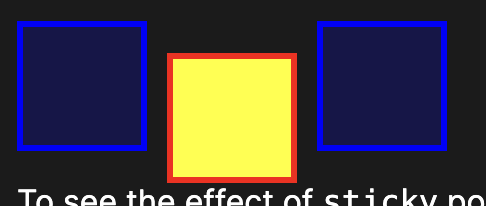

Understanding CSS Position

This is the default position value in CSS. The element will be positioned in accordance with its normal flow in the document. Top, bottom, left, and right will have no effect on the position of the element
The element is positioned according to the normal flow of the document, and then offset relative to itself. The offset does not effect the position of any other elements.
The element is removed from the normal document flow, and no space is created for the element in the page layout. The element is positioned relative to its closest positioned ancestor (if any) or to the initial containing block.
The element is positioned according to the normal flow of the document, and then offset relative to its nearest scrolling ancestor and containing block (nearest block-level ancestor), including table-related elements
